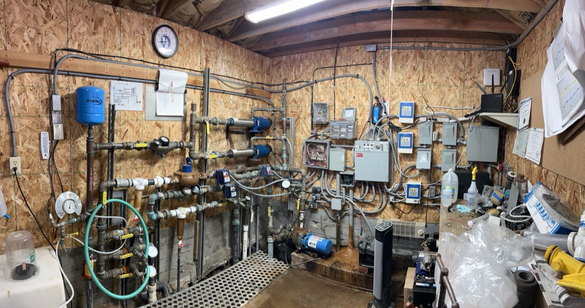
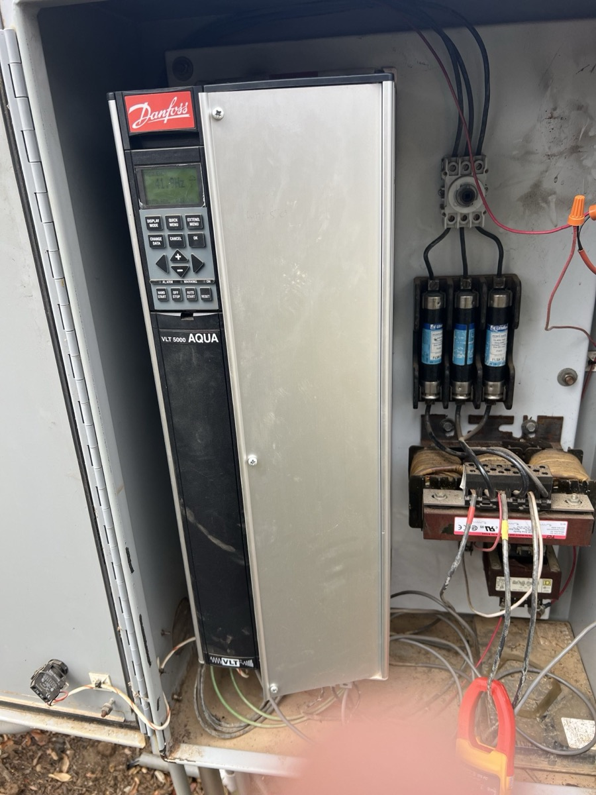

By SCWS Team
Published February 1, 2026 · 12 min read
Your well pump sits 200 feet underground, running 24/7, for the next 15-20 years. That's roughly 8 million pump cycles. Choose the wrong brand, and you'll be pulling that pump back up in 5 years—at $2,000+ just for the labor. Choose wisely, and you'll barely think about it for two decades.
After installing thousands of pumps across San Diego and Riverside Counties over 30+ years, we've watched certain brands perform flawlessly while others fail repeatedly. This isn't marketing—it's hard-won field experience. Here's our honest breakdown of which submersible pump brands actually deliver, and which ones we'd avoid putting in our own wells.
Quick Brand Ranking Summary
- 1. Franklin Electric — Best overall value, excellent reliability, great parts availability
- 2. Grundfos — Premium efficiency, superior engineering, higher price point
- 3. Goulds (Xylem) — Solid mid-range option, good commercial reputation
- 4. Sta-Rite (Pentair) — Reliable budget-friendly choice, widely available
- 5. Budget Brands — Lower upfront cost, shorter lifespan, not recommended for deep wells
The Hidden Cost of "Budget" Pumps
A $400 pump that lasts 5 years costs more than a $1,200 pump that lasts 20 years—especially when you factor in $1,500-2,500 in labor costs each time you pull the pump. Do the math before buying cheap.
Franklin Electric: The Industry Standard

Franklin Electric has been manufacturing submersible motors and pumps since 1944, and they've earned their reputation as the dominant force in the North American well pump market. When well professionals talk about reliable pumps, Franklin is typically the first name mentioned—and for good reason.
Franklin Electric Overview
Franklin Electric specializes in submersible motors that pair with various pump ends from manufacturers like Grundfos, Goulds, and others. Their motors are the heart of most quality submersible systems in the United States. The company is headquartered in Indiana and maintains extensive manufacturing and distribution networks across North America, ensuring parts are always available when you need them.
What sets Franklin apart is their focus on motor technology. Their 2-wire and 3-wire submersible motors are engineered specifically for the demanding conditions found in wells—constant submersion, varying water temperatures, and years of continuous cycling. They've refined this technology over eight decades.
Franklin Electric Pros
- Exceptional reliability: 15-25 year lifespan is common with proper installation
- Best parts availability: Every well supply house stocks Franklin components
- Contractor preference: Most professionals know these motors inside and out
- Wide product range: Options for every depth and flow rate requirement
- Proven track record: 80+ years of continuous improvement
- Strong technical support: Excellent resources for installers and homeowners
Franklin Electric Cons
- Higher price than budget brands: Quality costs more upfront
- Not the most efficient: Grundfos edges them out on energy savings
- Basic aesthetics: Utilitarian design (though this rarely matters underground)
Franklin Electric Warranty
Franklin Electric offers a 5-year limited warranty on their submersible motors when installed by a qualified contractor. The warranty covers manufacturing defects but excludes damage from dry running, lightning, improper voltage, or abrasive/corrosive water conditions. Importantly, Franklin stands behind their warranty claims—we've processed many over the years and they handle them professionally.
Price Range: Franklin Electric submersible motors typically cost $400-1,000 for residential sizes (1/2 HP to 2 HP). Complete pump systems with Franklin motors range from $600-1,500 depending on specifications.
Grundfos: Premium Engineering Excellence

Grundfos is a Danish company that's earned a reputation as the world's largest pump manufacturer. When efficiency, quiet operation, and cutting-edge technology matter most, Grundfos is often the best submersible pump choice—if you're willing to pay the premium.
Grundfos Overview
Founded in 1945, Grundfos approaches pump engineering with a philosophy of innovation and sustainability. They manufacture complete pump systems—motors and pump ends together—designed to work as integrated units. This holistic approach results in exceptional efficiency and reliability, though it does mean you're committed to their ecosystem.
Grundfos is particularly known for their SQ and SQE series submersible pumps, which feature built-in protection systems, variable speed capability (SQE models), and outstanding energy efficiency ratings. Their pumps are commonly specified for commercial, municipal, and high-end residential applications.
Grundfos Pros
- Superior energy efficiency: Can reduce electricity costs 10-30% versus competitors
- Exceptional build quality: Premium materials and manufacturing tolerances
- Quieter operation: Noticeably less vibration and noise transmission
- Built-in protection: Dry-run protection and soft-start features standard on many models
- Variable speed options: SQE series adjusts output to demand, saving energy
- Long lifespan: 15-25+ years is typical with proper conditions
Grundfos Cons
- Highest price point: 20-50% more expensive than comparable Franklin systems
- Limited parts availability: Not every supplier stocks Grundfos components
- Proprietary systems: Harder to mix and match with other manufacturers
- Fewer local experts: Some contractors aren't familiar with Grundfos specifics
Grundfos Warranty
Grundfos provides a 5-year limited warranty on their SQ and SQE submersible pumps. Like Franklin, the warranty covers manufacturing defects and requires professional installation. Grundfos also offers extended warranty options in some markets. Their warranty processing is handled through authorized distributors.
Price Range: Grundfos SQ series pumps typically cost $800-1,800 for residential applications. The variable-speed SQE series ranges from $1,200-2,500. Premium pricing reflects premium engineering.
Franklin vs Grundfos: Head-to-Head Comparison
The Franklin vs Grundfos debate is common among homeowners researching well pumps. Here's how they compare in key categories:
| Factor | Franklin Electric | Grundfos |
|---|---|---|
| Price | $600-1,500 | $800-2,500 |
| Energy Efficiency | Good (65-70%) | Excellent (70-80%) |
| Parts Availability | Excellent | Good |
| Expected Lifespan | 15-25 years | 15-25 years |
| Warranty | 5 years | 5 years |
| Contractor Familiarity | Excellent | Good |
| Best For | Most residential wells | High-efficiency priority |
The verdict: For most Southern California homeowners, Franklin Electric offers the best balance of quality, value, and serviceability. Choose Grundfos if energy efficiency is your top priority and you're comfortable with the higher investment.
Goulds (Xylem): Commercial Heritage, Residential Quality
Goulds Water Technology, now part of Xylem Inc., has been manufacturing pumps since 1848—making them one of the oldest pump companies in existence. Their submersible pumps bring commercial-grade durability to residential applications.
Goulds Overview
Goulds built their reputation in industrial and municipal water systems before expanding into residential markets. This commercial heritage shows in their pump construction—heavy-duty components designed for demanding applications. Many Goulds pumps use Franklin Electric motors, combining Goulds pump ends with Franklin's proven motor technology.
Goulds Pros
- Industrial-grade construction: Built to handle challenging conditions
- Excellent for high-sediment wells: More tolerant of sand and particles
- Strong commercial reputation: Proven in demanding applications
- Good mid-range pricing: Quality without premium brand markup
- Wide distribution: Available through most well supply houses
Goulds Cons
- Corporate changes: Ownership transitions have affected consistency
- Less residential focus: Not as refined for home applications as Franklin or Grundfos
- Variable quality reports: Some inconsistency noted in recent years
Goulds Warranty
Goulds offers a 5-year limited warranty on most residential submersible pumps. The warranty terms are similar to Franklin and Grundfos, covering manufacturing defects with professional installation required.
Price Range: Goulds submersible pumps typically cost $500-1,400 for residential systems, positioning them between budget brands and premium manufacturers.
Sta-Rite (Pentair): Reliable and Affordable
Sta-Rite, owned by Pentair, offers a solid middle-ground option for homeowners seeking quality without the premium price of Franklin or Grundfos. They've been in the water business since 1934 and maintain a strong presence in the residential market.
Sta-Rite Overview
Sta-Rite focuses on residential water systems, including submersible pumps, pressure tanks, and water treatment equipment. Their pumps are widely available at home improvement stores and through professional contractors, making them accessible for both DIY and professional installations.
Sta-Rite Pros
- Competitive pricing: Often 15-25% less than Franklin equivalents
- Wide availability: Stocked at major retailers and supply houses
- Solid reliability: 10-15 year lifespan is achievable
- Good parts support: Pentair's distribution network ensures availability
- DIY-friendly documentation: Clear installation guides
Sta-Rite Cons
- Shorter lifespan: Typically 10-15 years versus 15-25 for premium brands
- Less efficient: Higher energy consumption than Grundfos or Franklin
- Mixed professional opinions: Some contractors prefer other brands
Sta-Rite Warranty
Sta-Rite provides a 5-year limited warranty on their submersible pumps, matching the industry standard. Professional installation is recommended but not always required for warranty claims.
Price Range: Sta-Rite submersible pumps typically cost $400-1,000 for residential systems, making them an affordable quality option.
Budget Brands: Flotec, Red Lion, and Others
Budget submersible pump brands like Flotec, Red Lion, Utilitech, and various store brands offer the lowest upfront costs. However, our experience suggests these savings often cost more in the long run.
Budget Brand Reality Check
Budget pumps typically use less refined manufacturing processes, lower-grade materials, and may cut corners on motor windings, bearings, and seals. While they work fine initially, they simply don't last as long as premium brands—especially in challenging conditions like the deep wells and mineral-rich water common in Southern California.
Budget Brand Pros
- Lowest upfront cost: $250-500 for basic models
- Retail availability: Stocked at most hardware stores
- Adequate for shallow wells: May work fine for less demanding applications
- Good for temporary needs: Rentals, seasonal properties
Budget Brand Cons
- Short lifespan: Typically 5-8 years, sometimes less
- Higher failure rates: More warranty claims and early replacements
- Limited warranty support: Claims can be difficult to process
- Higher long-term cost: Multiple replacements plus repeated labor charges
- Not recommended for deep wells: The stakes are too high when replacement costs $1,500+ in labor
Warning: The True Cost of Cheap Pumps
For a 300-foot well, labor to pull and reinstall a pump runs $1,200-2,000. A $400 budget pump lasting 5 years costs $400 + $1,500 labor = $1,900 every 5 years, or $7,600 over 20 years. A $1,200 Franklin pump lasting 20 years costs $1,200 + $1,500 labor = $2,700 total. The "expensive" pump saves nearly $5,000.
What Southern California Well Service Recommends
After decades of installing, servicing, and replacing well pumps throughout San Diego and Riverside Counties, our recommendation is clear: Franklin Electric delivers the best value for most residential well owners in Southern California.
Why We Install Franklin
- Proven performance in our region: Franklin pumps handle our deep wells, hard water, and varying conditions reliably
- Parts when you need them: When something does go wrong, we can get Franklin parts immediately
- Consistent quality: We know exactly what we're getting with every Franklin installation
- Fair pricing: Premium quality without excessive markup
- Excellent warranty support: Franklin honors their warranties professionally
We also install Grundfos for customers who prioritize maximum efficiency or have specific technical requirements. For budget-conscious customers who understand the trade-offs, Sta-Rite provides acceptable quality at a lower price point.
We generally discourage budget brands for primary home wells, especially in deep applications. The math simply doesn't work when you factor in replacement labor costs.
Price Ranges by Brand: Complete Overview
| Brand | Pump Cost | Installed Cost* | Expected Life |
|---|---|---|---|
| Grundfos | $800-2,500 | $2,300-4,500 | 15-25 years |
| Franklin Electric | $600-1,500 | $2,000-3,500 | 15-25 years |
| Goulds/Xylem | $500-1,400 | $1,800-3,200 | 12-18 years |
| Sta-Rite | $400-1,000 | $1,600-2,800 | 10-15 years |
| Budget Brands | $250-600 | $1,200-2,200 | 5-8 years |
*Installed costs include professional labor for typical 200-400 foot well depths in Southern California. Deeper wells or difficult conditions increase costs.
How to Choose the Right Submersible Pump Brand
Selecting the best submersible pump for your property involves several considerations beyond brand name. Here's our recommended decision framework:
1. Consider Your Well Depth
For shallow wells under 100 feet, the stakes are lower—replacement labor is more affordable, so mid-range brands like Sta-Rite may make sense. For deep wells over 200 feet common in our area, premium brands like Franklin or Grundfos offer better long-term value because each replacement is expensive.
2. Evaluate Your Water Quality
High sediment, sand, or mineral content shortens pump life. If your water test shows challenging conditions, invest in a premium brand with better abrasion resistance and motor protection.
3. Calculate Total Cost of Ownership
Don't just compare pump prices—calculate total cost over 20 years including energy consumption, expected replacements, and labor for your well depth. Often the "expensive" pump is actually the cheapest choice.
4. Match Flow Rate to Demand
Ensure your chosen pump can deliver adequate flow for your household's peak demand while staying within your well's yield capacity. Our pump sizing guide explains this in detail.
5. Think About Serviceability
Choose a brand your local contractors know well and can service quickly. In Southern California, Franklin and Sta-Rite have the best support networks.
Frequently Asked Questions
What is the most reliable submersible well pump brand?
Franklin Electric and Grundfos are consistently rated as the most reliable submersible well pump brands. Franklin Electric dominates the North American market with proven reliability and excellent parts availability. Grundfos, a Danish company, is known for exceptional engineering and energy efficiency. Both brands offer 5-year warranties and regularly deliver 15-20+ years of service when properly installed.
Is Franklin Electric better than Grundfos?
Both are excellent brands with different strengths. Franklin Electric offers better parts availability in the US, more affordable pricing, and strong contractor support. Grundfos provides superior energy efficiency, quieter operation, and premium engineering. For most residential applications in Southern California, Franklin Electric offers the best value. For commercial or high-efficiency priorities, Grundfos may be worth the premium.
How much does a quality submersible pump cost?
Quality submersible pumps range from $500-2,500 for the pump alone, depending on brand and horsepower. Budget brands like Flotec cost $300-600, mid-range options like Sta-Rite run $500-1,200, and premium brands like Franklin Electric ($600-1,500) and Grundfos ($800-2,500) cost more but offer longer lifespans. Total installed cost including labor typically ranges from $1,500-4,500.
How long do submersible well pumps last by brand?
Premium brands like Franklin Electric and Grundfos typically last 15-25 years with proper installation. Mid-range brands like Goulds and Sta-Rite average 10-15 years. Budget brands often only last 5-8 years. Water quality significantly affects lifespan—high sediment or mineral content can reduce any pump's life by 30-50%.
Should I buy a cheap submersible pump to save money?
Budget pumps rarely save money long-term. A $400 budget pump lasting 5 years costs more over 20 years than a $1,200 Franklin pump lasting 20 years—plus you pay for multiple installations. In deep wells (200+ feet common in Southern California), labor costs $800-2,000 per replacement. Investing in quality upfront typically saves $2,000-5,000 over the system's lifetime.
Need Expert Help Choosing a Well Pump?
Our technicians can evaluate your well conditions, water quality, and household needs to recommend the perfect pump brand and model. We install and service all major brands throughout San Diego and Riverside Counties.
Call (760) 440-8520 for a Free ConsultationRelated Equipment & Maintenance Guides
Complete Submersible Pump Guide
Everything you need to know about how submersible pumps work, sizing, and installation.
Submersible vs Jet Pump
Which pump type is right for your well depth and water needs?
Pressure Tank Sizing Guide
Proper tank sizing protects your pump and extends its lifespan.
Signs You Need a New Well Pump
Know when it's time to replace vs repair your failing pump.